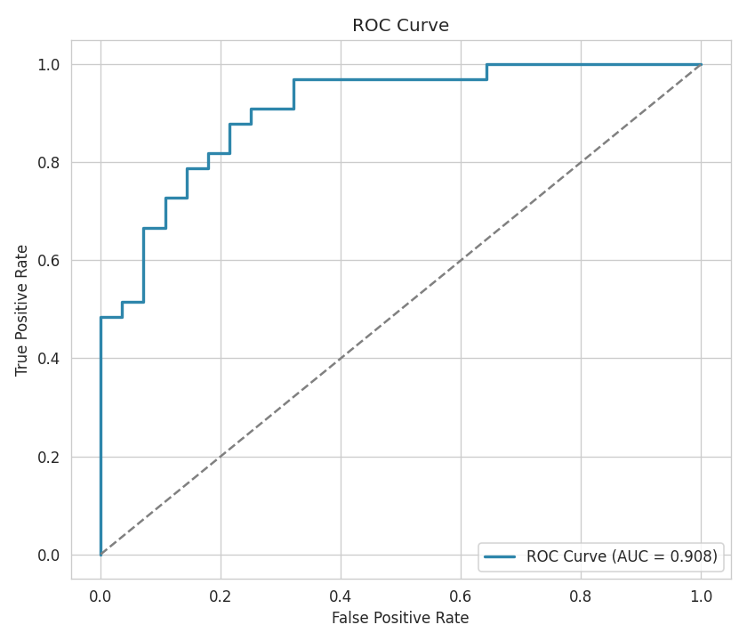
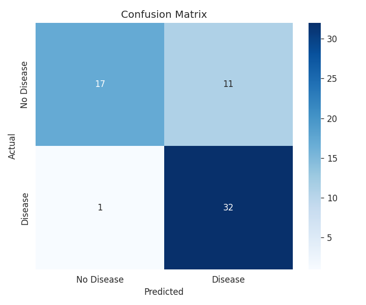
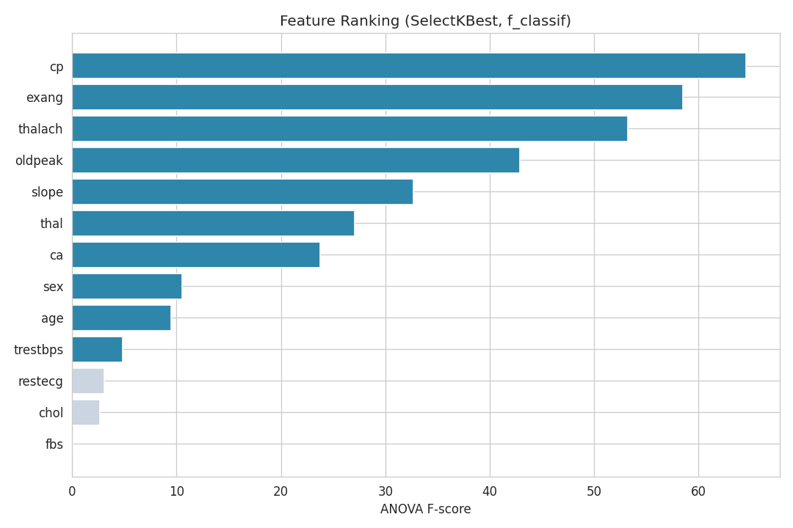

Cardiovascular Disease Risk Prediction & Evaluation System
XGBoost MLflow Streamlit scikit-learnCardioVision is an end-to-end machine learning application that predicts an individual's risk of cardiovascular disease using the UCI Heart Disease dataset, built with reproducible pipelines, experiment tracking, explainable predictions, and a deployable dashboard.
Full Documentation (README)Deployed on Streamlit Community Cloud: https://cardiovision-predictive-analytics-for-cardiovascular-health-mq.streamlit.app
| Metric | Value |
|---|---|
| Accuracy | 80.3% |
| Precision | 74.4% |
| Recall (Sensitivity) | 97.0% |
| F1 Score | 84.2% |
| ROC AUC | 0.908 |



Dataset -> Preprocessing -> XGBoost Training -> Threshold Optimization
-> Evaluation -> MLflow Tracking -> Streamlit DashboardView on GitHub (update this link to your repository)